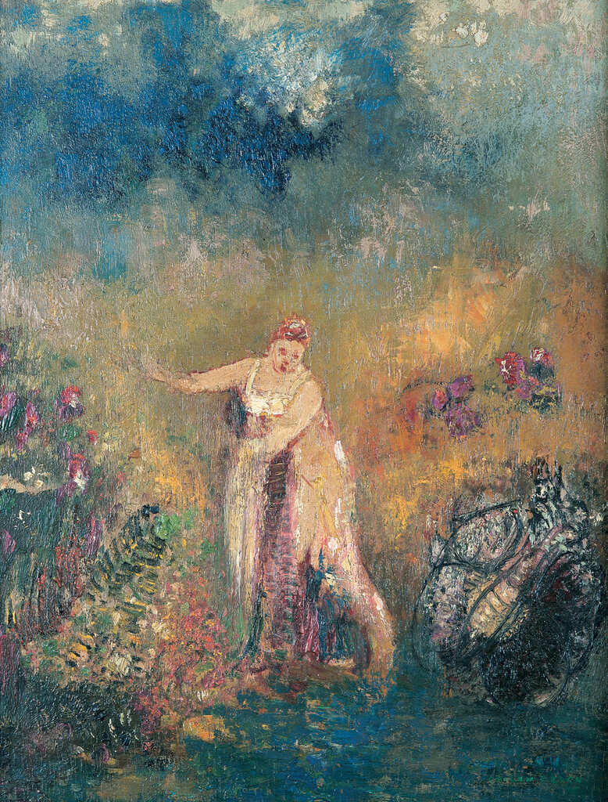
Le bain de Vénus (El baño de Venus) - 1908-1913 -
Redon, Odilon
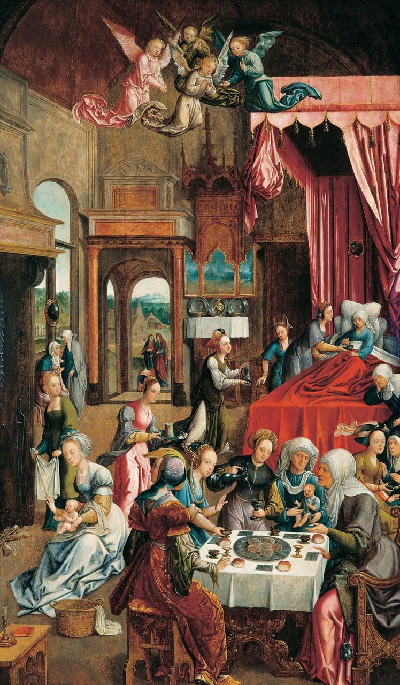
El nacimiento de la Virgen María -1661-
Oostanen, Jacob Cornelisz van
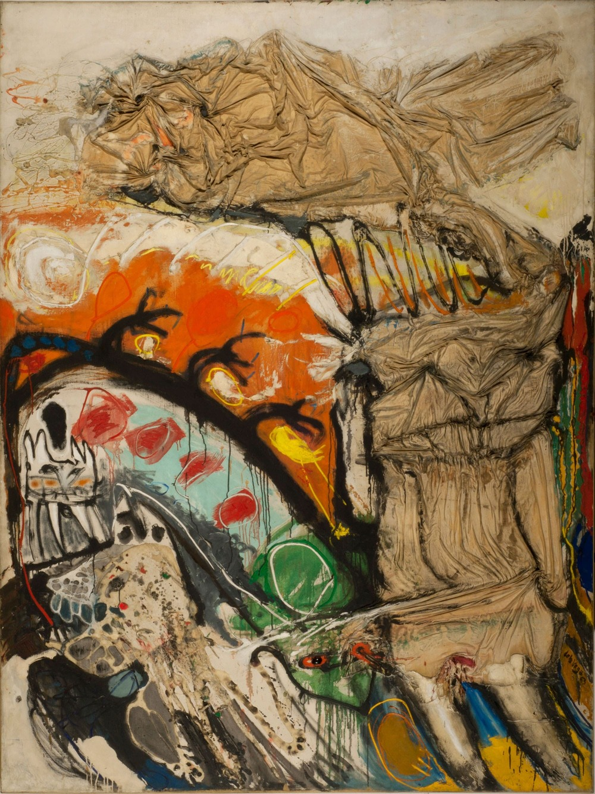
Intimidad de un tímido -1963-
De la Vega, Jorge
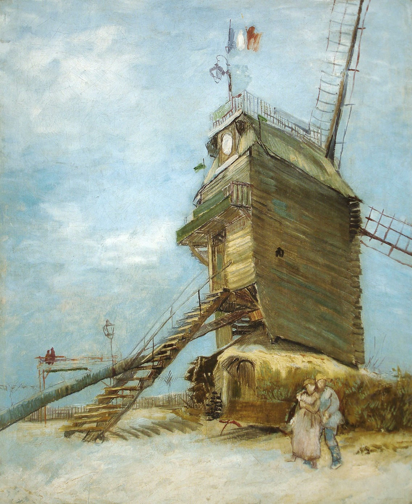
Le Moulin de la Galette -1886-1887-
Gogh, Vincent van
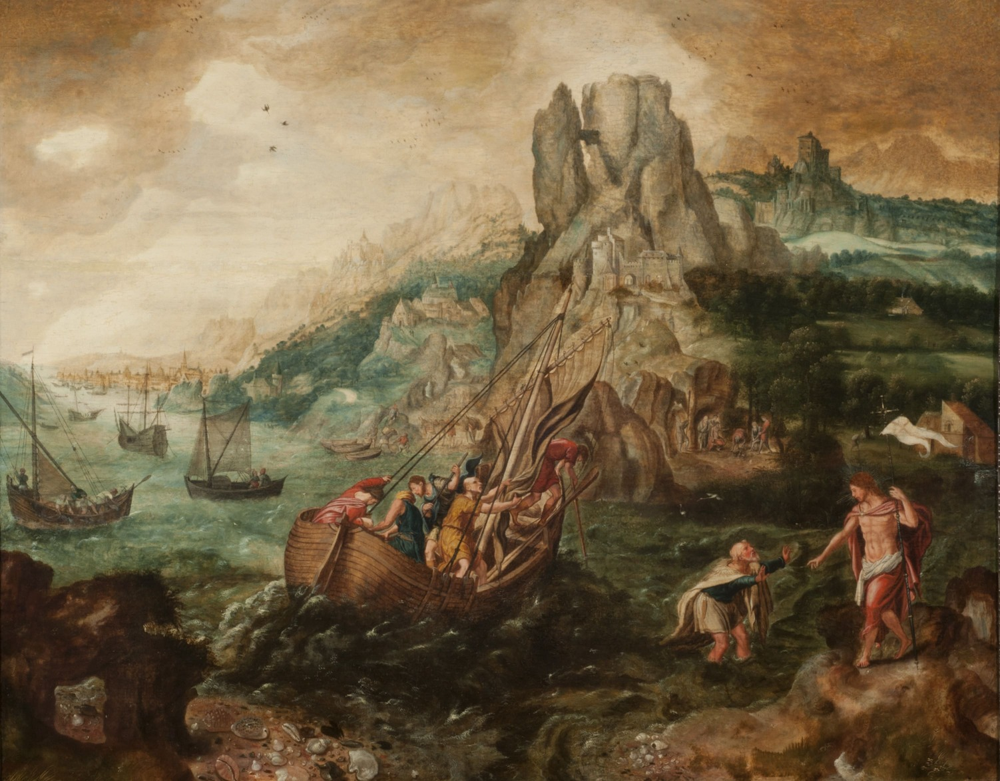
La última aparición de Cristo a sus discípulos -Siglo XVII-
Blès, Herri Met de
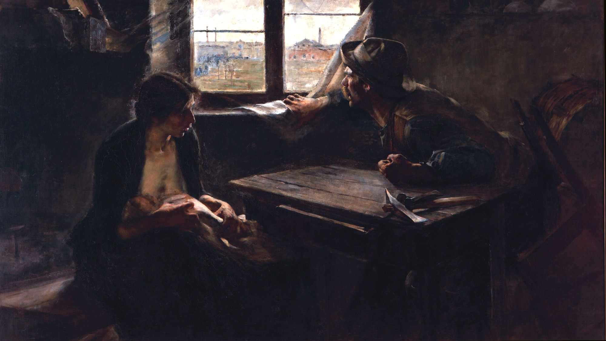
Sin pan y sin trabajo -1894-
Ernesto de la Cárcova
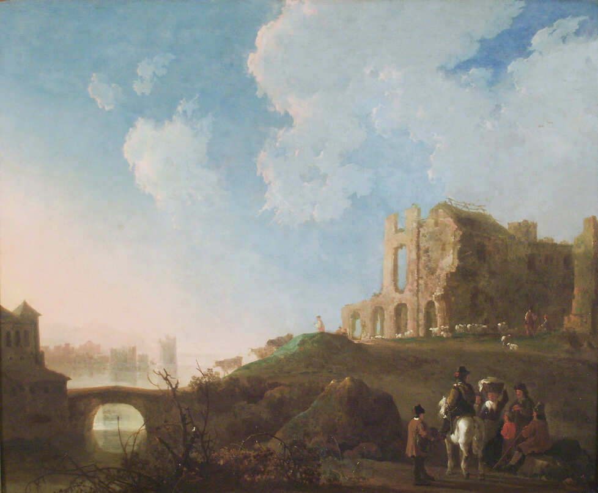
Paisaje con las ruinas de la Abadía de Rijnsburg -1645-
Albert Jacob Cuyp
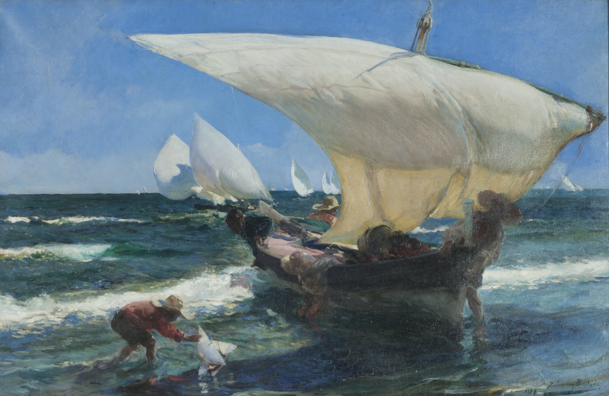
En la costa de Valencia -1898-
Joaquín Sorolla
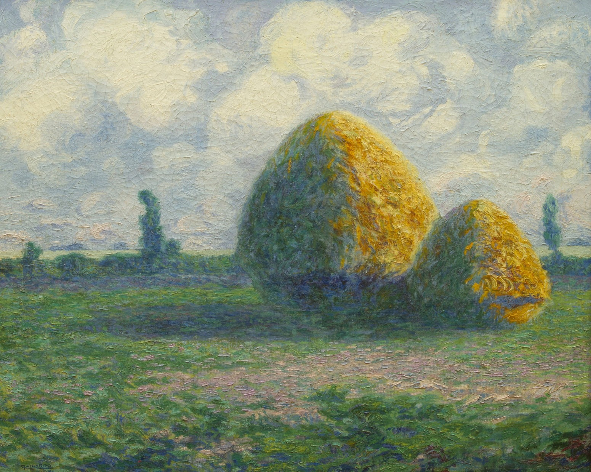
Las parvas (La pampa de hoy) -1911-
Martín Malharro
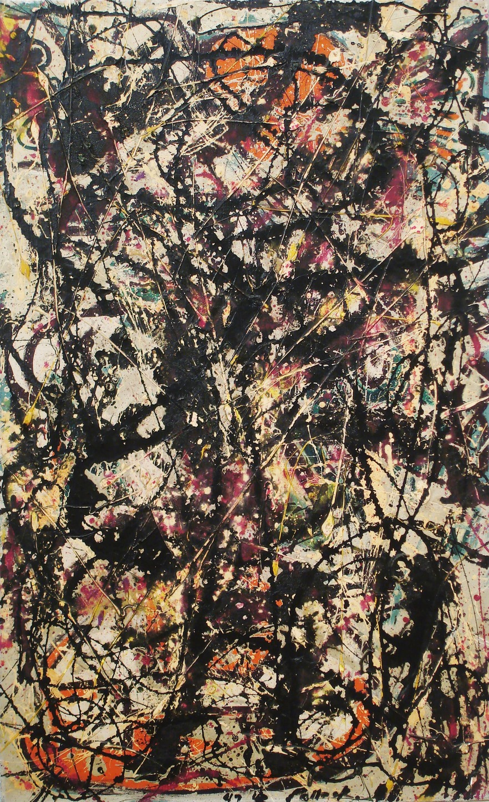
Shooting star (Estrella fugaz) -1947-
Shivya Nath
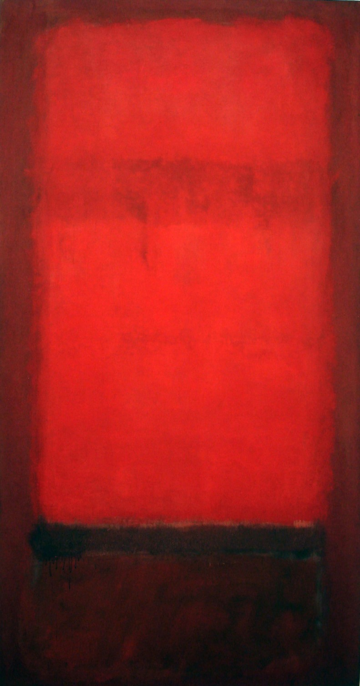
Light red over dark red (Rojo claro sobre rojo oscuro) -1955-1957-
Rothko, Mark